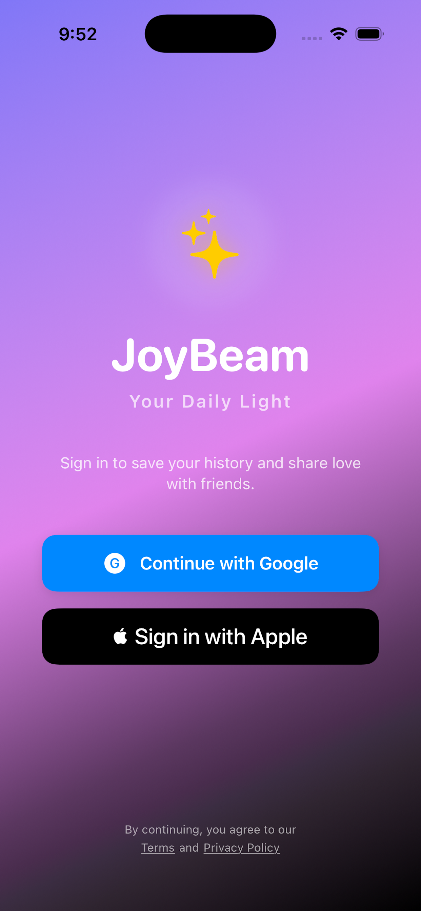
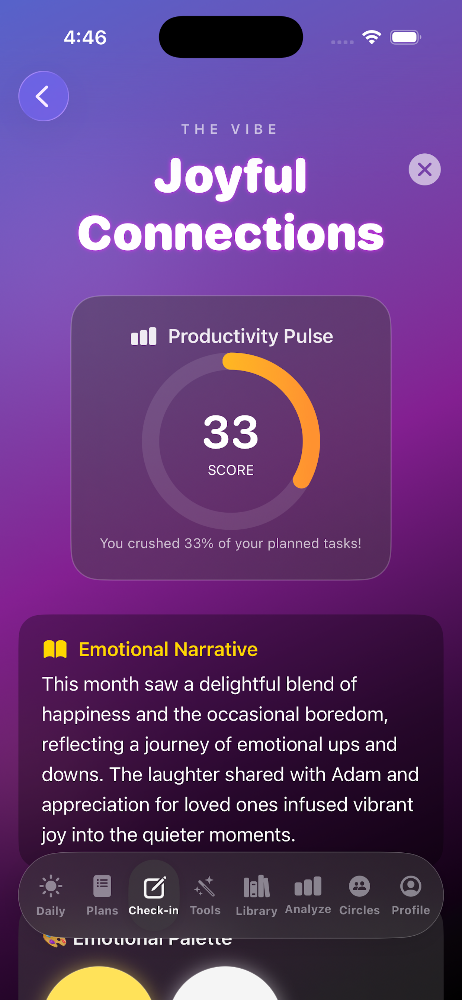
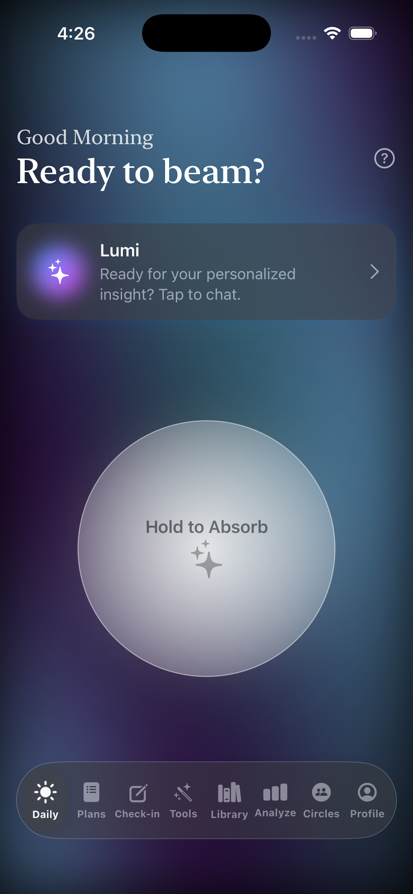
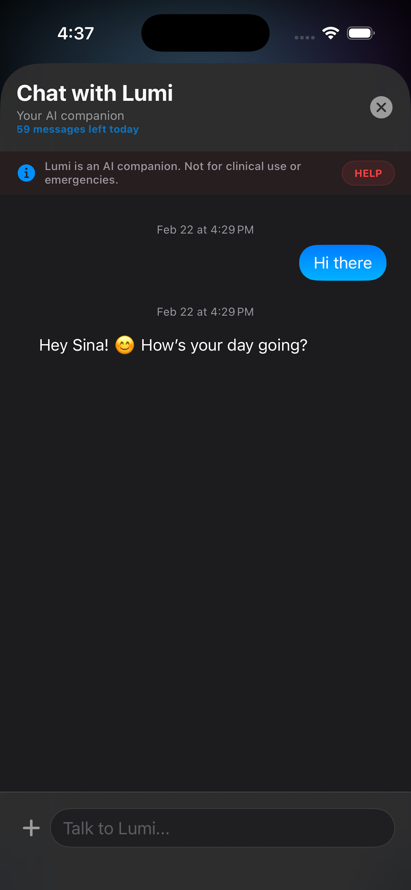
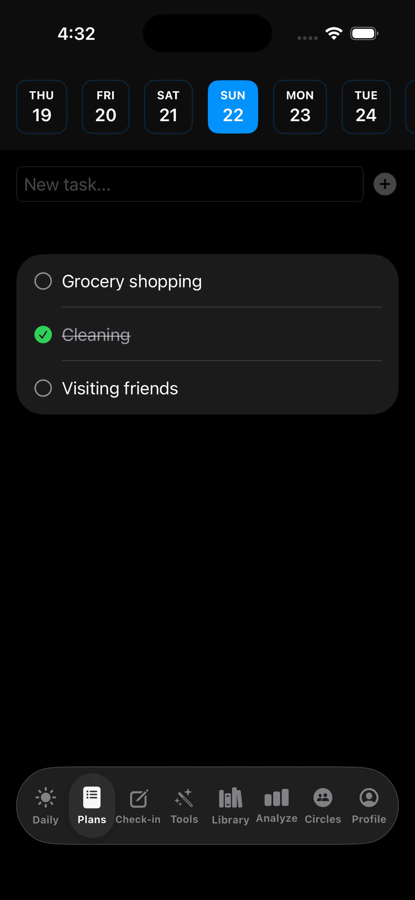
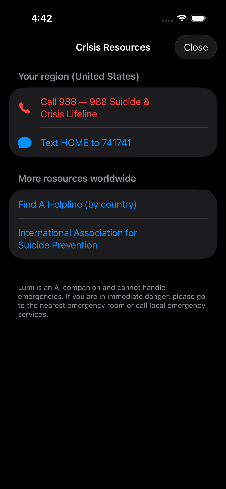

Your daily space for reflection, gratitude, and a little light.
JoyBeam is a mood and journal app for daily check-ins, gratitude, and reflection. Chat with Lumi, plan your day, and grow in one private place.


What is JoyBeam
A private place to pause and reflect
JoyBeam is a personal app for daily check-ins, mood tracking, and reflection. It’s a private place to pause, note how you feel, and capture what you’re grateful for — with an AI companion, simple planning, and optional community so you can keep a steady practice without the overwhelm.
Sign in with Apple, Google, or email and start your first check-in in seconds. Available on the App Store for iPhone and iPad.
Meet Lumi
Your in-app companion
Lumi is a friendly presence that helps you track your mood, reflect on your day, and find small moments of joy. Chat with Lumi for short, supportive messages tailored to your journey.
Lumi is there to support your practice — not as a therapist or crisis tool, but as a gentle nudge and a listening ear when you want to check in. In-app crisis resources are available via the HELP button where Lumi is shown.
Features
What you can do in JoyBeam
Daily check-ins, gratitude, planning, wellness tools, and optional community — all in one place.
Daily check-ins & mood tracking
Log how you feel and spot patterns over time.
Gratitude & reflection
Capture what went well and reflect in a few sentences.
Daily Spark
Start the day with a beam of light and a short piece of wisdom.
Daily planning
Set intentions and simple tasks so your day feels grounded.
Wellness tools
Breathing exercises, grounding techniques, and other quick resets.
Library & Analyze
Save favorite content and see your “Bubbles of Emotion” and mood trends.
Circles
Optional groups to share your journey, nudge friends, and celebrate wins.
Month in Review
A monthly recap of your gratitudes, moods, and progress.
Cloud backup & export
Encrypted backup (Plus/Pro) and data export so you own it (Pro).
Home screen widget
A quick glimpse of your daily light from the home screen.
App
A glimpse of JoyBeam




Plans
Free, Plus, and Pro
Start free; upgrade for more Lumi messages, cloud backup, and premium features.
- Limited Lumi messages
- Daily check-in & mood
- Gratitude journal
- Basic features
- More Lumi messages per day
- Cloud backup (encrypted)
- Daily planning
- Library, Analyze, Circles
- Even more Lumi messages
- Month in Review
- Data export (e.g. PDF)
- All Plus features
Subscribe monthly or yearly. Invitation codes supported.
Privacy & safety
Your data stays yours
JoyBeam is built for reflection and self-awareness. We use encryption and clear privacy practices so your data stays private. We’ll point you to in-app crisis resources when you need them.
For full details, see our Privacy Policy and Terms of Use (add link when available).